Header
1 字节的协议版本号
1 字节的版本号按位取反（用于快速校验头部）
2 字节的负载类型（payload type）
4 字节的负载长度（仅指头部之后的数据长度，不含 8 字节头部）
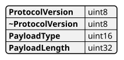
其中负载类型为 0x0000 的报文是通用 DoIP 头部否定响应（generic header NACK），用于回复头部存在错误的报文，所有 DoIP 实体都必须支持
TCP 报文类型
0x0005 路由激活请求
2 字节的 source address
1 字节的 activation type
4 字节的保留字段，标准要求固定为 0x00000000，该保留字段常被用作 vm specific（OEM 自定义数据），具体内容一般通过配置决定
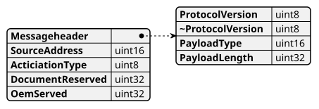
0x0006 路由激活响应
2 字节的 DoIP 实体逻辑地址（一般指 ECU/网关的地址）
2 字节的测试仪逻辑地址（一般指上位机的诊断地址）
1 字节的 routing activation response code，表示本次路由激活的结果（成功或具体的失败原因）
4 字节的保留字段（预留给未来标准使用），固定为 0x00000000
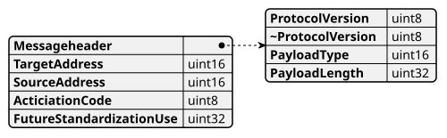
0x0007 存活检查请求
不携带任何数据
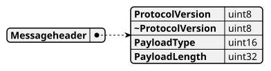
0x0008 存活检查响应
2 字节的源地址（发起响应的 DoIP 实体的逻辑地址）
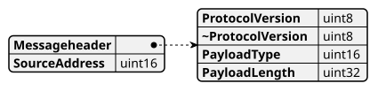
0x8001 诊断报文
2 字节的 source address
2 字节的 target address，可变长度的 UDS 诊断报文（长度由头部中的负载长度字段指明）
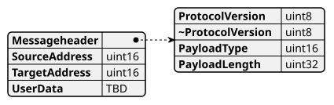
0x8002 诊断肯定确认
2 字节的 source address
2 字节的 target address
1 字节的 ack code
ack code 为 0x00 时，后面会携带完整的 UDS 诊断响应报文；其长度由报文内容本身决定
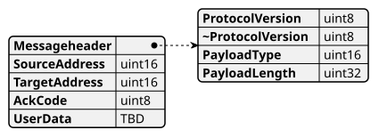
0x8003 诊断否定确认
2 字节的 source address
2 字节的 target address
1 字节的 nack code
后面可选携带之前收到的诊断请求报文（原样回传），其长度由报文内容本身决定
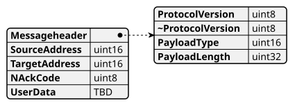
UDP 报文类型
0x4001 DoIP 实体状态请求
不携带任何数据
0x4002 DoIP 实体状态响应
1 字节的 node type（0x00 表示 DoIP 网关，0x01 表示 DoIP 节点）
1 字节的最大允许 tcp socket 数
1 字节的当前已建立的 tcp socket 数（指 socket 数，不是已激活的路由连接数）
4 字节的最大支持数据长度
0x4003 诊断电源模式请求
不携带任何数据
0x4004 诊断电源模式响应
1 字节的 diagnostic power mode
0x0001 车辆识别请求
不携带任何数据
0x0002 车辆识别请求（携带 eid）
6 字节的 eid
如果与自身 eid 不一致，则不回复（按标准要求静默丢弃该请求）
0x0003 车辆识别请求（携带 vin）
17 字节的 vin
如果与自身 vin 不一致，则不回复（按标准要求静默丢弃该请求）
0x0004 车辆识别响应/车辆声明
17 字节的 vin 码
2 字节的逻辑地址
6 字节的 eid
6 字节的 gid
1 字节的 further action required（以上字段均为必选）
vin/gid sync status 为可选字段，仅在 further action required 指示需要 vin/gid 同步时才携带
Header check handler
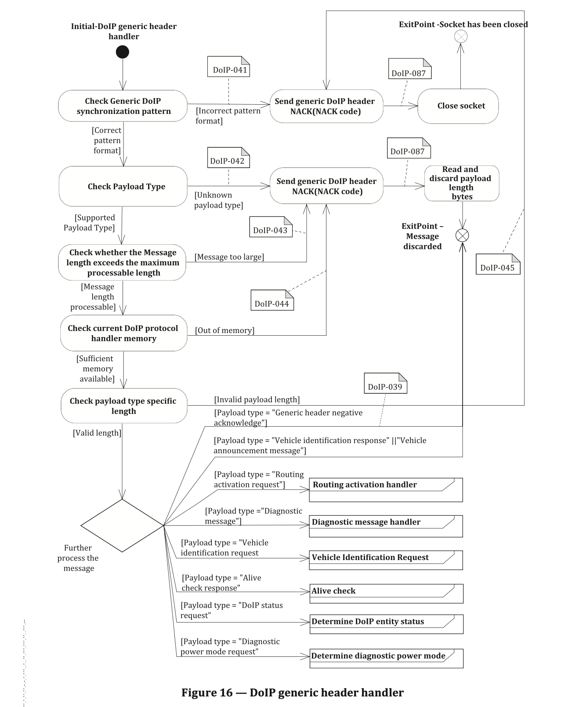
对应的错误码：
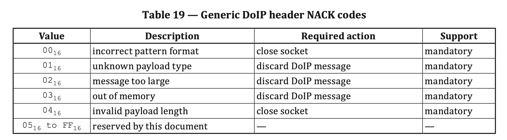
Diagnostic message check handler
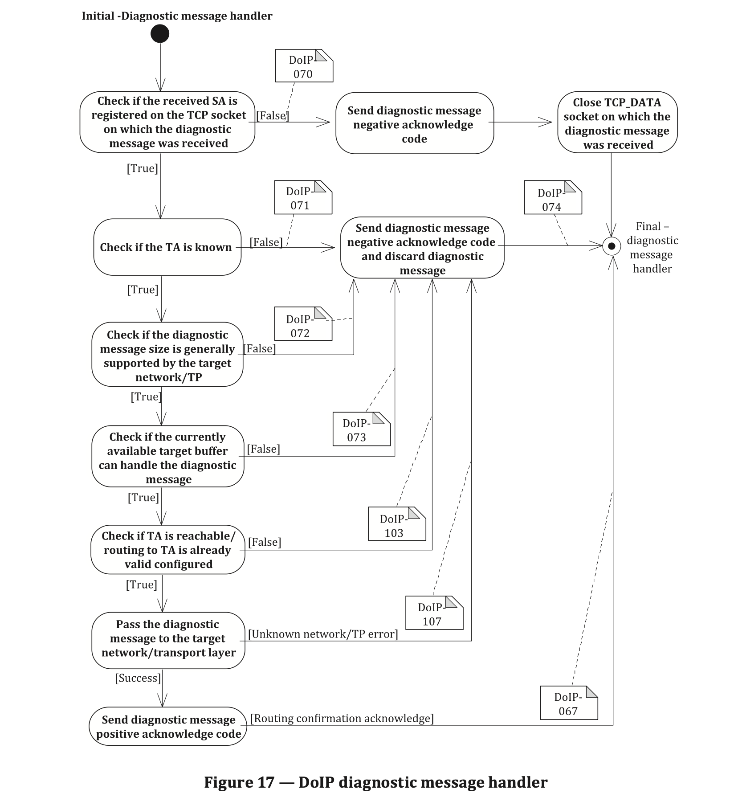
对应的错误码：
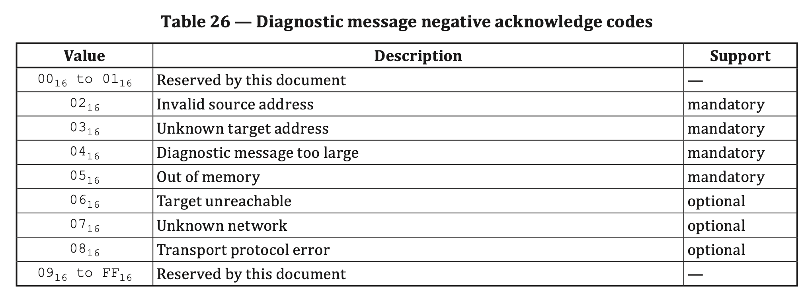
Routing activation check handler
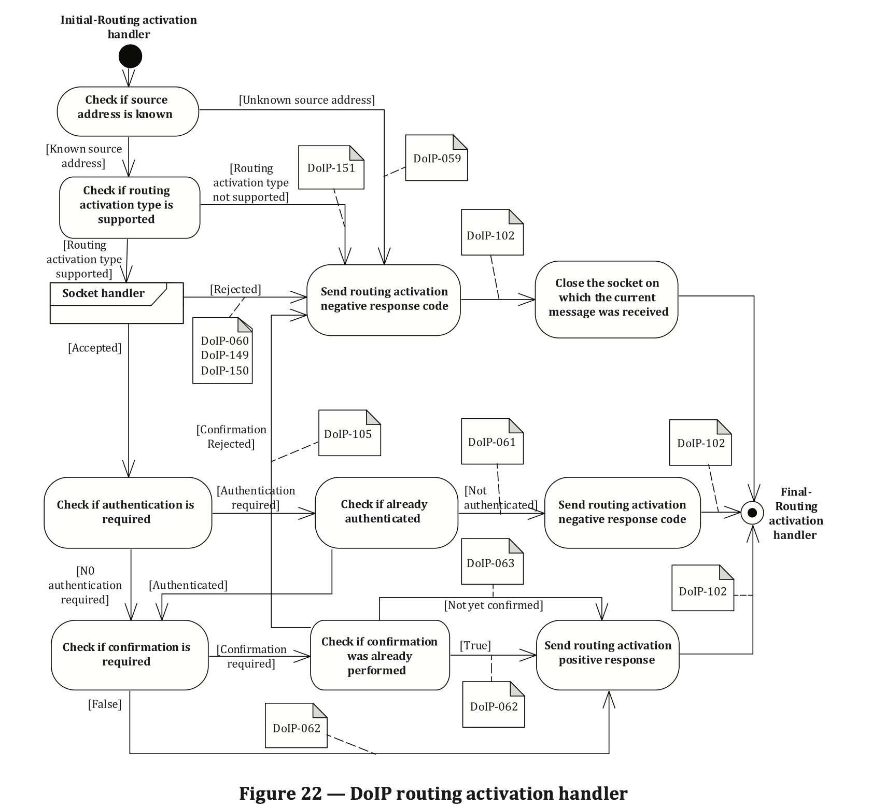
对应的错误码：
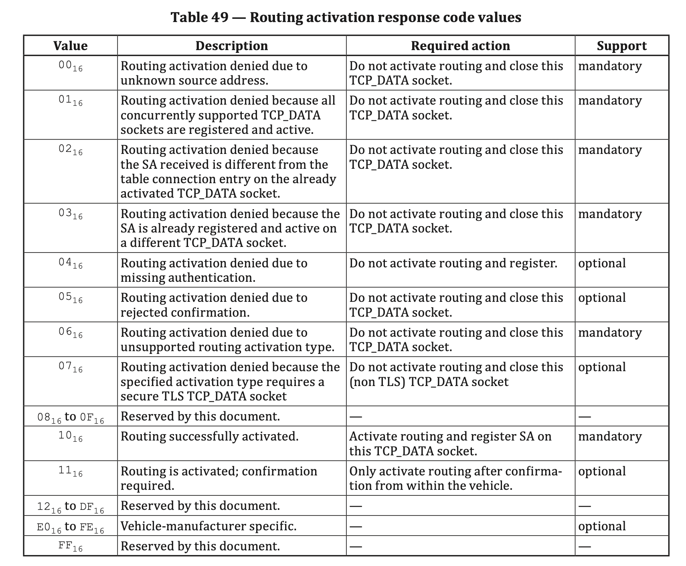